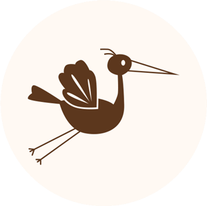
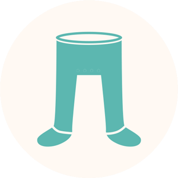

Для кого этот интенсив:

Для беременных, желающих быть максимально готовыми к родам и понимать как проходит этот процесс

Для всех будущих мам, которые хотят чувствовать себя уверенно, спокойно и безопасно во время беременности и родов

Для женщин, желающих обеспечить комфортное рождение своего будущего ребенка

Слободянюк Юлия facebook.com/julia.selyuk
"Это были мои первые роды и я очень рада, что попала к Ларисе Чепрасовой. Прошла программу подготовки к родам, осталась очень довольна. Благодаря Ларисе, удивительно приятной и милой женщине, и тем знаниям которые она даёт, тем навыкам и техникам расслабления, которым она меня обучила, роды у нас прошли легко и спокойно. Абсолютно удивительная для меня связь - что и как нужно расслабить, чтобы все прошло хорошо и без последствий, очень пригодилась:) Жалко что очень не многие владеют такими секретами. Это действительно делает роды приятным событием в жизни женщины!"